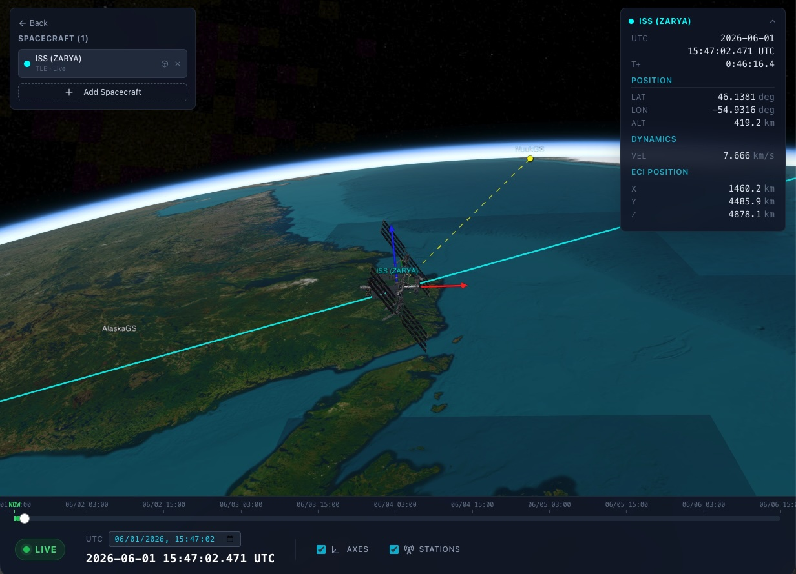

Satellite Trajectory Visualizer
Prototype for live 3D satellite trajectory visualization using TLE data or GNC simulation outputs from private software.
- Built the full-stack trajectory computation and rendering pipeline for low-latency interaction and stable playback in a real-time data visualization workflow.
- Solved performance bottlenecks with delta-time animation loops, O(log n) position lookup (binary search + interpolation), ECI to ECEF preprocessing, memoized Cesium callback properties, and orbit trail windowing.
- Delivered smooth, low-latency playback in a prototype environment.
